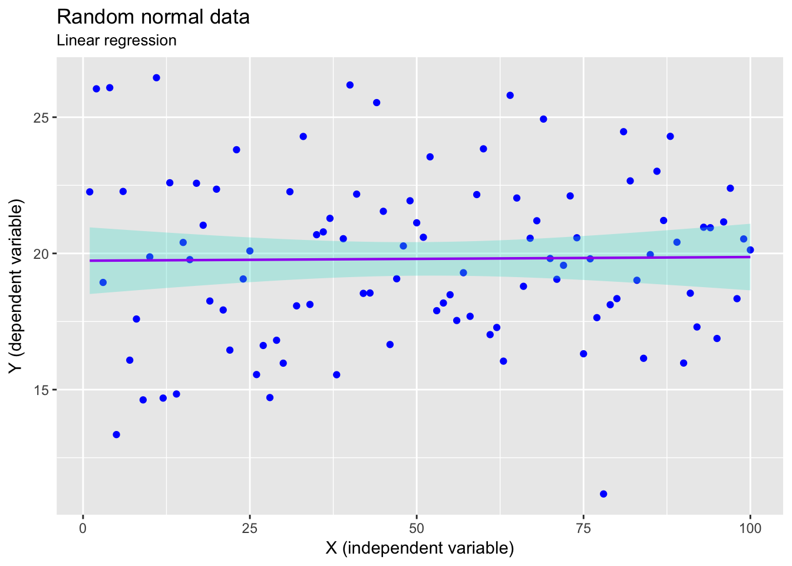

Simple linear regressions
## ── Attaching packages ─────────────────────────────────────────────────────────────────────────────────────────── tidyverse 1.2.1 ──
## ✔ ggplot2 2.2.1 ✔ purrr 0.2.4
## ✔ tibble 1.4.2 ✔ dplyr 0.7.4
## ✔ tidyr 0.8.0 ✔ stringr 1.3.0
## ✔ readr 1.1.1 ✔ forcats 0.3.0
## ── Conflicts ────────────────────────────────────────────────────────────────────────────────────────────── tidyverse_conflicts() ──
## ✖ .GlobalEnv::arrange() masks dplyr::arrange()
## ✖ dplyr::filter() masks stats::filter()
## ✖ dplyr::lag() masks stats::lag()
## ✖ dplyr::n() masks .env::n()
Regressions test the statistical significance of the dependence of one continuous variable on one or many independent continuous variables.
The simple linear regression equation
The linear regression equation is already known to you. It is:
Coefficients are parameters (statistics) that describe two properties of the linear line that best fit a scatter plot between a dependent variable and the independent variable. The dependent variable, $y_{n}$, may also be called the response variable, and the independent variable, $x_{n}$, the predictor. The regression model consists of an intercept term, $\alpha$, that describes where the fitted line starts and intercepts with the y-axis, and the slope, $\beta$, of the line. The amount of variation not explained by a linear relationship of $y$ on $x$ is termed the residual variation, or simply the residual or the error term, and in the above equation it is indicated by $\epsilon$.
The parameters $\alpha$ and $\beta$ are determined by minimising the sum of squares of the error term, $\epsilon$. It allows us to predict new fitted values of $y$ based on values of $x$.
We will demonstrate the principle behind a simple linear regression by using the built-in dataset faithful. According to the R help file for the data, the dataset describes the “Waiting time between eruptions and the duration of the eruption for the Old Faithful geyser in Yellowstone National Park, Wyoming, USA.”
head(faithful)
R> eruptions waiting
R> 1 3.600 79
R> 2 1.800 54
R> 3 3.333 74
R> 4 2.283 62
R> 5 4.533 85
R> 6 2.883 55
In this dataset there are two columns: the first, eruptions, denotes the duration of the eruption (in minutes), and the second, waiting, is the waiting time (also in minutes) until the next eruptions. Its linear regression model can be expressed as:
Here we fit the model in R. When we perform a linear regression in R, it’ll output the model and the coefficients:
eruption.lm = lm(eruptions ~ waiting, data = faithful)
summary(eruption.lm)
R>
R> Call:
R> lm(formula = eruptions ~ waiting, data = faithful)
R>
R> Residuals:
R> Min 1Q Median 3Q Max
R> -1.29917 -0.37689 0.03508 0.34909 1.19329
R>
R> Coefficients:
R> Estimate Std. Error t value Pr(>|t|)
R> (Intercept) -1.874016 0.160143 -11.70 <2e-16 ***
R> waiting 0.075628 0.002219 34.09 <2e-16 ***
R> ---
R> Signif. codes: 0 '***' 0.001 '**' 0.01 '*' 0.05 '.' 0.1 ' ' 1
R>
R> Residual standard error: 0.4965 on 270 degrees of freedom
R> Multiple R-squared: 0.8115, Adjusted R-squared: 0.8108
R> F-statistic: 1162 on 1 and 270 DF, p-value: < 2.2e-16
The intercept
The intercept is the best estimate of the starting point of the fitted line on the lefthand side of the graph. You will notice that there is also an estimate for the standard error of the estimate for the intercept.
The regression coefficient
The interpretation of the regression coefficient is simple. For every one unit of change in the independent variable (here waiting time) there is a corresponding change in the dependent variable (here the duration of the eruption). This is the slope or gradient, and it may be positive or negative. In the example the coefficient of determination of the line is denoted by the value 0.076 min.min^-1^ in the column termed Estimate and in the row called waiting (the latter name will of course depend on the name of the response column in your dataset). The coefficient of determination multiplies the response variable to produce a prediction of the response based on the slope of the relationship between the response and the predictor. It tells us how much one unit in change of the independent variable determines the corresponding change in the response variable. There is also a standard error for the estimate.
A graph of the linear regression
slope <- round(eruption.lm$coef[2], 3)
# p.val <- round(coefficients(summary(eruption.lm))[2, 4], 3) # it approx. 0, so...
p.val = 0.001
r2 <- round(summary(eruption.lm)$r.squared, 3)
ggplot(data = faithful, aes(x = waiting, y = eruptions)) +
geom_point() +
annotate("text", x = 45, y = 5, label = paste0("slope == ", slope, "~(min/min)"), parse = TRUE, hjust = 0) +
annotate("text", x = 45, y = 4.75, label = paste0("italic(P) < ", p.val), parse = TRUE, hjust = 0) +
annotate("text", x = 45, y = 4.5, label = paste0("italic(r)^2 == ", r2), parse = TRUE, hjust = 0) +
stat_smooth(method = "lm", colour = "salmon") +
labs(title = "Old Faithful eruption data",
subtitle = "Linear regression",
x = "Waiting time (minutes)",
y = "Eruption duration (minutes)")

Predicting from the linear model
Knowing $\alpha$ and $\beta$ allows us to predict what the erruption duration will be for a certain amount of waiting. Since the slope of the line is positive we can expect that the longer the waiting time is between eruptions the longer the eruption would be. But how can we quantify this? We start by extracting the coefficients (both the intercept and the regression coefficient). Then we use these values to reassemble the regression equation that we have written out above (i.e., $eruption_{n}=\beta \cdot waiting_{n}+\alpha+\epsilon$). Here’s how:
# use the accessor function to grab the coefficients:
erupt.coef <- coefficients(eruption.lm)
erupt.coef
R> (Intercept) waiting
R> -1.87401599 0.07562795
# how long would an eruption last of we waited, say, 80 minutes?
waiting <- 80
# the first and second coef. can be accessed using the
# square bracket notation:
erupt.pred <- erupt.coef[1] + (erupt.coef[2] * waiting)
erupt.pred # the unit is minutes
R> (Intercept)
R> 4.17622
The prediction is that, given a waiting time of 80 minutes since the previous eruption, the next eruption will last 4.176 minutes.
There is another way to do this. The predict() function takes a dataframe of values for which we want to predict the duration of the eruption and returns a vector with the waiting times:
pred.val <- data.frame(waiting = c(60, 80, 100))
predict(eruption.lm, pred.val) # returns waiting time in minutes
R> 1 2 3
R> 2.663661 4.176220 5.688779
The coefficient of determination, $r^{2}$
The coefficient of determination, the $r^{2}$, of a linear model is the quotient of the variances of the fitted values, $\hat{y_{i}}$, and observed values, $y_{i}$, of the dependent variable. If the mean of the dependent variable is $\bar y$, then the $r^{2}$ is:
In our Old Faithful example, the coefficient of determination is returned together with the summary of the eruption.lm object, but it may also be extracted as:
summary(eruption.lm)$r.squared
R> [1] 0.8114608
What does the $r^{2}$ tell us? It tells us the “fraction of variance explained by the model” (from the summary.lm() help file). In other words it is the proportion of variation in the dispersion (variance) of the measured dependent variable, $y$, that can be predicted from the measured independent variable, $x$ (or variables in the case of multiple regressions). It gives us an indication of how well the observed outcome variable is predicted by the observed influential variable, and in the case of a simple linear regression, the geometric relationship of $y$ on $x$ is a straight line. $r^{2}$ can take values from 0 to 1: a value of 0 tells us that there is absolutely no relationship between the two, whilst a value of 1 shows that there is a perfect fit and a scatter of points to denote the $y$ vs. $x$ relationship will all fall perfectly on a stright line.
n <- 100
set.seed(666)
rand.df <- data.frame(x = seq(1:n),
y = rnorm(n = n, mean = 20, sd = 3))
ggplot(data = rand.df, aes(x = x, y = y)) +
geom_point(colour = "blue") +
stat_smooth(method = "lm", colour = "purple", size = 0.75, fill = "turquoise", alpha = 0.3) +
labs(title = "Random normal data",
subtitle = "Linear regression",
x = "X (independent variable)",
y = "Y (dependent variable)")

Regressions may take on any relationship, not only a linear one. For example, there are parabolic, hyperbolic, logistic, exponential, etc. relationships of $y$ on $x$, and here, too, does $r^{2}$ tell us the same thing. If we assume that the samples were representatively drawn from a population (i.e. the sample fully captures the relationship of $y$ on $x$ that is present in the entire population), the $r^{2}$ will represent the relationship in the population too.
In the case of our Old Faithful data, the $r^{2}$ is 0.811, meaning that the proportion of variance explained is 81.1%; the remaining 18.9% is not (yet) accounted for by the linear relationship. Adding more predictors into the regression (i.e. a multiple regression) might consume some of the unexplained variance and increase the overall $r^{2}$.
Significance test for linear regression
There are several hypothesis tests associated with a simple linear regression. All of them assume that the residual error, $\epsilon$, in the linear regression model is independent of $x$ (i.e. nothing about the structure of the error term can be inferred based on a knowledge of $x$), is normally distributed, with zero mean and constant variance. We say the residuals are i.i.d. (independent and identically distributed, which is a fancy way of saying they are random).
We can decide whether there is any significant relationship (slope) of $y$ on $x$ by testing the null hypothesis that $\beta=0$. Rejecting the null hypothesis causes the alternate hypothesis of $\beta \neq 0$ to be accepted. This test is automatically performed when fitting a linear model in R and asking for a summary of the regression object, but it is insightful and important to know that the test is simply a one-sample t-test. In the regression summary the probability associated with this test is given in the Coefficients table in the column called Pr(>|t|).
In the Old Faithful data, the p-value associated with waiting is less than 0.05 and we therefore reject the null hypothesis that $\beta=0$. So, there is a significant linear relationship of eruption duration on the waiting time between eruptions.
Question: Note that there is also a hypothesis test in the
(Intercept)row. What does this do?
Confidence interval for linear regression
Again we have to observe the assumption of i.i.d. as before. For a given value of $x$, the 95% confidence interval around the mean of the observed dependent variable, $\bar{y}$, can be obtained as follows:
pred.val <- data.frame(waiting = c(80))
predict(eruption.lm, pred.val, interval = "confidence")
R> fit lwr upr
R> 1 4.17622 4.104848 4.247592
So, the 95% confidence interval of the mean eruption duration for the waiting time of 80 minutes is between 4.105 and 4.248 minutes.
Prediction interval for linear regression
Observe that $\epsilon$ is i.i.d. For a given value of $x$, the interval estimate of the future dependent variable, $y$, is called the prediction interval. The way we do this is similar to finding the confidence interval:
pred.val <- data.frame(waiting = c(80))
predict(eruption.lm, pred.val, interval = "prediction")
R> fit lwr upr
R> 1 4.17622 3.196089 5.156351
The intervals are wider. The difference between confidence and prediction intervals is subtle and requires some philosophical consideration. In practice, if you use these intervals to make inferences about the population from which the samples were drawn, use the prediction intervals. If you instead want to describe the samples which you have taken, use the confidence intervals.
Residual plot
Standardised residual
Normal probability plot of residuals
Using an additional categorical variable
- When you use a categorical variable, in R the intercept represents the default position for a given value in the categorical column. Every other value then gets a modifier to the base prediction.